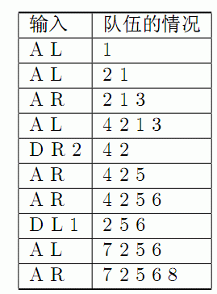

BZPRO
#3403. [Usaco2009 Open]Cow Line 直线上的牛
内存限制：128 MiB
时间限制：3 Sec
提交
提交记录
讨论
题目描述
题目描述
约翰的N只奶牛（编为1到N号）正在直线上排队．直线上开始的时候一只牛也没有．接下来发生了S(1≤S≤100000)次事件，一次事件可能是以下四种情况之一：
．一只奶牛加入队伍的左边（输入“AL”）．
．一只奶牛加入队伍的右边（输入“AR”）．
·K只队伍左边奶牛离开（输入“DLK”）．
·K只队伍右边奶牛离开（输入“DRK”）．
请求出最后的队伍是什么样．
数据保证离开的奶牛不会超过队伍里的奶牛数，最后的队伍不空
输入格式
第1行输入S，之后S行每行描述一次事件，格式如题目描述所示
输出格式
由左到右输出队伍最后的情况．
样例
样例输入
10
A L
A L
A R
A L
D R 2
A R
A R
D L 1
A L
A R
样例输出
7
2
5
6
8
数据范围与提示
